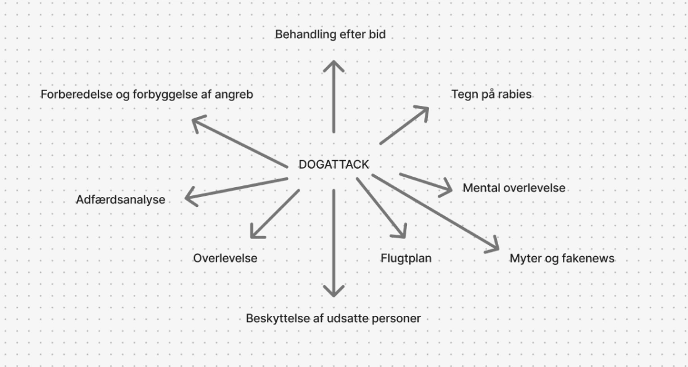
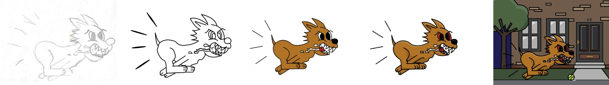

TEMA 4: ANIMATION
I dette tema har jeg lært at bruge JavaScript sammen med CSS-animationer til at skabe interaktiv funktionalitet på et website. Jeg har arbejdet ud fra en foruddefineret HTML-skabelon og Style Tile og har selv tilføjet design og funktioner, så websitet fik sit eget udtryk. Jeg har udviklet og rentegnet grafiske elementer i Adobe Illustrator og fået indblik i, hvordan man planlægger interaktive flows.
VALG AF TEMA
BRAINSTORM FOR VALGTE EMNE
I dette tema skulle jeg tage udgangspunkt i en fiktiv nødssituation. Opgaven startede med en brainstorm over mulige emner, og jeg valgte at fokusere på rabiesangreb fra hunde og hvordan man kan overleve sådanne situationer. Efter at have besluttet mig for emnet, lavede jeg en mere detaljeret brainstorm i FigJam for at planlægge indholdet på hjemmesiden. Størstedelen af idéerne fra denne proces blev efterfølgende implementeret på sitet.
FRA SKITSE TIL FÆRDIG TEGNING
PROCES AF TEGNING
Jeg skulle lære at tegne i Adobe Illustrator, hvilket i starten var en stor udfordring for mig. Jeg havde særligt svært ved at farvelægge tegningen, da jeg havde arbejdet med lagene på en uhensigtsmæssig måde. Det resulterede i, at jeg måtte starte forfra hele fem gange. Undervejs begyndte jeg dog at forstå, hvordan programmet fungerede, og til sidst lykkedes det mig at tilføje en baggrund til hunden, som er hovedmotivet i tegningen. På billedet ses processen med at tegne hunden trin for trin.
FORMS MED JAVASCRIPT
I dette forløb lærte vi også, hvordan man opretter en formular med JavaScript. Formularen skulle fungere sådan, at den gav en fejlmeddelelse, hvis man for eksempel indtastede en e-mailadresse uden et “@”. Når formularen var korrekt udfyldt, skulle man kunne se en opsummering af sine svar. Jeg oplevede JavaScript som en udfordring, da det er et helt andet sprog end HTML og CSS, som jeg netop var begyndt at få godt styr på. Det var derfor en smule overvældende at gå i gang med, men med hjælp fra både undervisere og medstuderende lykkedes det til sidst at få det til at fungere.
HVAD HAR JEG LÆRT?
I dette tema har jeg lært at JavaScript er rigitg svært at forstå i starten, men det giver mere og mere mening jo mere man sidder med det. Det har lært mig meget tålmodighed samt at kunne lave en side mere interaktiv og hvordan man laver darkmode for en side. Desuden har jeg også lært at tegne i Adobe Illustrater. Temaet har også givet mig en solid forståelse for, hvordan design og kode spiller sammen i udviklingen af brugervenlige og levende websites.